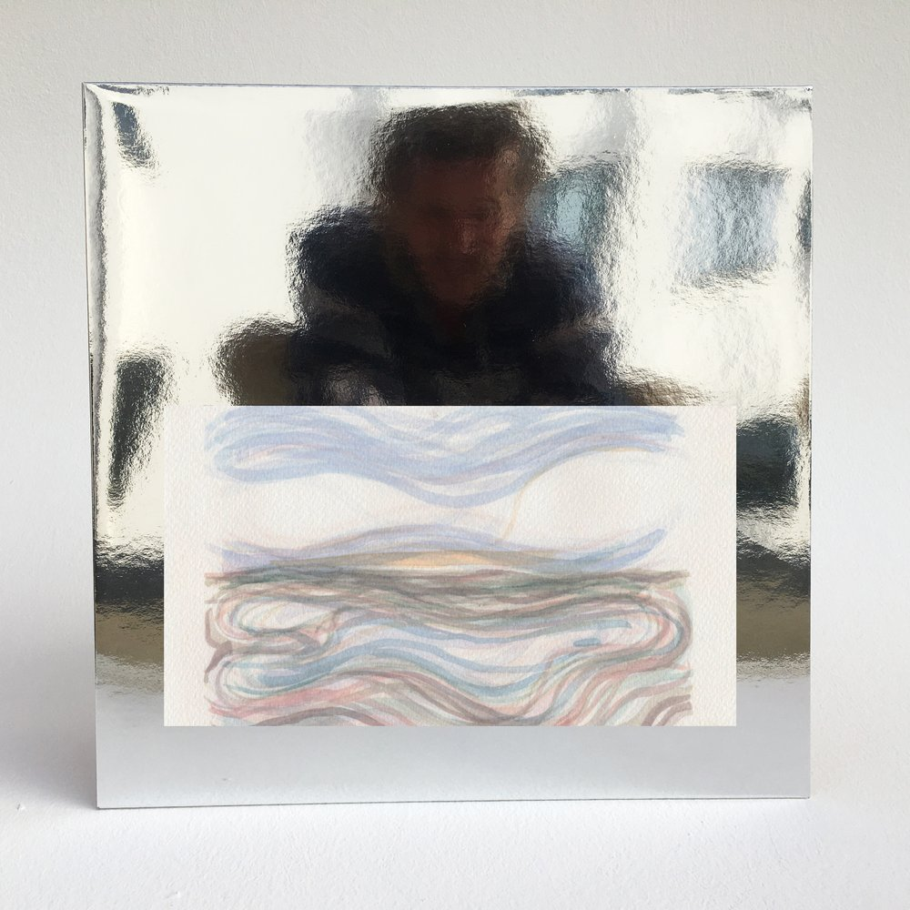
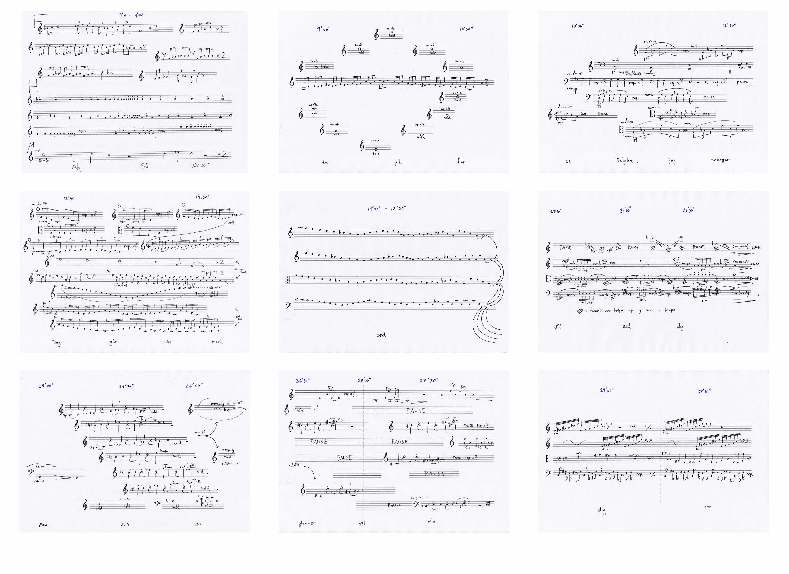

HALVCIRKEL & ANDERS LAUGE MELDGAARD - FRAGMENT 94 · 2021
Fragment 94 is a piece for string quartet commissioned by Halvcirkel. It premiered at Alice in Copenhagen 2019 and has since then been performed in various different versions. One version features the members of the string quartet taking turns reciting singel words from poet Mette Moestrup's text Fragment 94, another version is purely instrumental. A version of the piece was even been performed at Skuespilhuset, during Copenhagen Jazz Festival 2022, with the composer Anders Lauge Meldgaard playing one of the violin parts on New Ondomo (a modern Japanese version of the French instrument Ondes Martenot) and electronics.
12" vinyl album + digital released in oct. 2021
A composition written for the string quartet Halvcirkel by Anders Lauge Meldgaard on the base of Fragment 94 by Sappho, re-written by Mette Moestrup who is special guest feature on the album. The score for the composition is open ended and leaves many possibilities and choices to be made by the musicians during performance, creating a space for non-hierarchical, playful, crisp interaction.
Halvcirkel is:
Mika Persdotter - Viola
Bettina Marie Ezaki - Violin
Nicole Hogstrand - Cello
Pernille Kristiansen - Violin
Special guest Mette Moestrup
Music composed by Anders Lauge Meldgaard
Text by Mette Moestrup & Sappho
Recorded by Pape Arce
Mixed by Aske Zidore
Master by Tó Pinheiro da Silva
Water color painting by Mads Westrup
Photo by Anders Lauge Meldgaard
Artwork by Anders Lauge Meldgaard & Mads Westrup
Distribution by State51
9 pages score excerpt:

Review from Passive/Aggressive - November 2021 (in Danish)
view on Bandcamp
www.halvcirkel.com